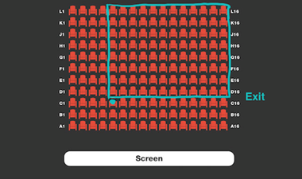

Your friend advised you to see a new performance in the most popular theater in the city. He knows a lot about art and his advice is usually good, but not this time: the performance turned out to be awfully dull. It's so bad you want to sneak out, which is quite simple, especially since the exit is located right behind your row to the left. All you need to do is climb over your seat and make your way to the exit. The main problem is your shyness: you're afraid that you'll end up blocking the view (even if only for a couple of seconds) of all the people who sit behind you and in your column or the columns to your left. To gain some courage, you decide to calculate the number of such people and see if you can possibly make it to the exit without disturbing too many people. Given the total number of rows and columns in the theater (nRows and nCols, respectively), and the row and column you're sitting in, return the number of people who sit strictly behind you and in your column or to the left, assuming all seats are occupied. Example For nCols = 16, nRows = 11, col = 5, and row = 3, the output should be solution(nCols, nRows, col, row) = 96. Here is what the theater looks like: 
function solution(nCols, nRows, col, row) {
return (nRows - row) * (nCols - col + 1);
}
Explanation:
Esta é uma função chamada solution que recebe quatro números inteiros como argumentos: nCols (número de colunas), nRows (número de linhas), col (coluna) e row (linha).
Essa função tem a finalidade de calcular o número de células restantes em uma matriz retangular, considerando uma célula de referência indicada por suas coordenadas col e row.
(nRows - row): Isso representa a quantidade de linhas restantes abaixo da linha de referência (row). Quando subtraímos row de nRows, obtemos a contagem de linhas abaixo da célula de referência.
(nCols - col + 1): Isso representa a quantidade de colunas restantes à direita da coluna de referência (col). Quando subtraímos col de nCols e adicionamos 1, obtemos a contagem de colunas à direita da célula de referência.
Multiplicando esses dois valores juntos, obtemos o número total de células restantes na matriz, a partir da célula de referência. Isso é útil para calcular áreas não exploradas ou regiões disponíveis em um mapa bidimensional ou em uma matriz, considerando um ponto de partida.
Por exemplo, se tivermos uma matriz 4x5 (4 colunas, 5 linhas) e indicarmos a célula (2, 3) como referência, a função calculará (5 - 3) * (4 - 2 + 1), o que resulta em 6. Isso significa que há 6 células restantes na matriz, abaixo da linha 3 e à direita da coluna 2.